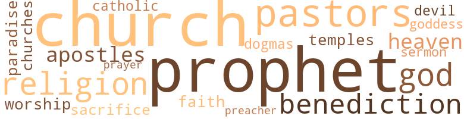

Key to the Problem; Or, Tale of a Sable City, by Johnson, Henry T. (1904)
20 music-related terms matched in this text.
Most frequent terms in this topic: exposition (3); section (3); music (3); line (1); pipe (1)
chapter.n.01
Definition: a subdivision of a written work; usually numbered and titled
| word | sentence |
|---|---|
| chapter | It was during one of these quiet diversions that an incident occurred which gave rise to the romance of the present chapter and formed the major link in the chain of events which caused the mighty centennial and city event of her Southern home to pale into minor interest by its side . |
chorus.n.01
Definition: any utterance produced simultaneously by a group
| word | sentence |
|---|---|
| chorus | A chorus of agreement followed and the leader of the newsboys ' brigade continued . ' |
exposition.n.04
Definition: (music) the section of a movement (especially in sonata form) where the major musical themes first occur
| word | sentence |
|---|---|
| expositions | No more was asked for in the appropriation invoked for the colored citizens than was even more liberally granted to Irish and German-Americans in the recent expositions which marked epochs in their respective histories . |
| exposition | Congress , through the National Liberty Party , which grew out of the old Republican party , had appropriated thirty millions to the same project ; The sum for the exposition by this figure now reached the adequate and flattening amount of more than one hunderd million dollars . |
| exposition | The most inviting and picturesque land site was selected for the exposition grounds and buildings and was in easy reach of the city , both by steam and electric railways , the latter leading to the main entrance within a stone 's throw of the Administration Building . |
| exposition | As it thundered along it was diffiicult to differentiate or identify passing objects by the wayside , but the towering imposing forms of the huge Fair buildings loomed up with increasing size and grandeur , until the big spurting locomotive was brought to a standstill within a stone 's throw of the main entrance leading to the entrancing and extensive exposition grounds . |
music.n.01
Definition: an artistic form of auditory communication incorporating instrumental or vocal tones in a structured and continuous manner
| word | sentence |
|---|---|
| music | Others might regale themselves with sight-seeing and taking in the novel revelations of the unique community , but it was up to Douglass to face the music and keep time with the fitness of other things . |
| music | Congratulations , festivities and music poured their choicest incense at the feet of the lovely pair . |
| music | What nature did not furnish to enrich the central park was amply supplied in sweet music furnished by the park band and in . |
organ.n.05
Definition: wind instrument whose sound is produced by means of pipes arranged in sets supplied with air from a bellows and controlled from a large complex musical keyboard
| word | sentence |
|---|---|
| organ | The interior of the building usually impressive to the beholder for its simple beauty was decorated for the occasion and expressed a solemn grandeur that was heightened by the rich and deep-toned wedding march evoked from the pipe organ at which a queenly graduate of the Boston Conservatory of Music presided . |
pipe.n.04
Definition: a tubular wind instrument
| word | sentence |
|---|---|
| pipes | " Ah , snuff yer gas pipes . |
| pipe | The interior of the building usually impressive to the beholder for its simple beauty was decorated for the occasion and expressed a solemn grandeur that was heightened by the rich and deep-toned wedding march evoked from the pipe organ at which a queenly graduate of the Boston Conservatory of Music presided . |
section.n.01
Definition: a self-contained part of a larger composition (written or musical)
| word | sentence |
|---|---|
| section | It was arranged that the most convenient of the public circles be taken in and a drive through Liberia Avenue with a bird 's - eye-view of the business section of the city , which would exhaust the margin of time left before the displays of the day began . |
| section | As section after section of mounted guards , uniformed officials , civilians , professionals , mechanics , business men , and common and skilled laborers filed by the grand stand cheers rose in volleys from the throats of the onlookers , while waving of kerchiefs and clapping of hands expressed the emotions of the better favored occupants of reserved seats . |
| section | As section after section of mounted guards , uniformed officials , civilians , professionals , mechanics , business men , and common and skilled laborers filed by the grand stand cheers rose in volleys from the throats of the onlookers , while waving of kerchiefs and clapping of hands expressed the emotions of the better favored occupants of reserved seats . |
sing.v.02
Definition: produce tones with the voice
| word | sentence |
|---|---|
| sing | Their poets can sing with no less enchanting sweetness than the bards of Greece or England , while their artists can wield the brush and chisel with an ease that rivals an Orpheus or Angello . |
suite.n.01
Definition: a musical composition of several movements only loosely connected
| word | sentence |
|---|---|
| suites | Douglass and the other associate guests were conducted to elegant suites of rooms at the L'Overture Hotel , the leading hostelry of the place . |
theme.n.03
Definition: (music) melodic subject of a musical composition
| word | sentence |
|---|---|
| theme | The mammoth Exhibition and Jubilee was the theme of every tongue but that of Eunice Montgomery and Douglass Hayden Lewis . |
tune.n.01
Definition: a succession of notes forming a distinctive sequence
| word | sentence |
|---|---|
| line | The cooks , porters and waiters knew their business and everything worked in apple-pie order until the dividing line between the upper and lower geographical region was reached on the journey Southward just beyond the nation 's capital . |
| lines | Nor are the industrial and sociological changes of this experimental community less marvelous than their stride in population , for growth along these lines had its tremendous mainspring in the march of ideas and irresistable conquests of truth . |
9 violence-related terms matched in this text.
Most frequent terms in this topic: hate (3); killed (1); bleeding (1); fought (1); fight (1)
bleeding.n.01
Definition: the flow of blood from a ruptured blood vessel
| word | sentence |
|---|---|
| bleeding | Seeing the tragic result of their reckless driving the occupants of the flaming machine steered to the bleeding victim and assisted Douglass in lifting his limp and quivering form to a seat of comfort . |
dagger.n.01
Definition: a short knife with a pointed blade used for piercing or stabbing
| word | sentence |
|---|---|
| daggers | If this would-be knight of the quill has a heart for verse-making , and nature up to this time has not moved it , perhaps the vernal sun will reach him and pierce it with his radiant daggers . |
fight.n.05
Definition: a boxing or wrestling match
| word | sentence |
|---|---|
| fight | As a fitting climax , the leading speaker in support of the measure referred to the patriotism and valor of the colored man in every crisis of the country 's life , citing Attucks , who fell a martyr in the fight for American independence ; Salem , at Bunker Hill ; Carney , at Wagner ; Young and others at El Caney and Santiago de Cuba . |
fight.v.02
Definition: fight against or resist strongly
| word | sentence |
|---|---|
| fought | The thirty millions voted by Congress for the Afro-American Centennial was fought by Southern Congressmen on the ground that the appropriation meant their endorsement of class legislation , which was contrary to the letter and spirit of the Constitution as they construed it . |
hate.n.01
Definition: the emotion of intense dislike; a feeling of dislike so strong that it demands action
| word | sentence |
|---|---|
| hate | Their descendants have lived to see cities reared and temples of worship and learning tower where once the hydras of slavery and race hate and appalling ignorance trailed their foul and : slimy forms . |
| hate | They were refugees from lawless sections where the atmosphere of race hate was unbearable . |
| hate | Where trailed caste monsters in the slime of unreasoning hate will be traced the holy forms of vestal spirits pioneering to higher planes . |
kill.v.10
Definition: cause the death of, without intention
| word | sentence |
|---|---|
| killed | Do n't cher know the rich old guy wot 's big kid got killed by the horse wot throwed him from de fright of de red devil dat 's suddenly turned de corner . |
pike.n.04
Definition: medieval weapon consisting of a spearhead attached to a long pole or pikestaff; superseded by the bayonet
| word | sentence |
|---|---|
| pikes | In springtime the sceneries along railways , pikes and roadsides were such as to arouse interest and emotion in the dullest observer . |
32 religion-related terms matched in this text.
Most frequent terms in this topic: pastors (3); church (3); benediction (2); God (2); preacher (1)
apostle.n.03
Definition: (New Testament) one of the original 12 disciples chosen by Christ to preach his gospel
| word | sentence |
|---|---|
| apostles | 4 : 11 , ) " And he gave some to be apostles ; and some prophets ; and some evangelists ; and some pastors and teachers . " |
| Apostles | The Catholic Douay has it : " And he gave some Apostles , and some Prophets , and some Evangelists , and other some pastors and doctors . " |
blessing.n.05
Definition: the act of praying for divine protection
| word | sentence |
|---|---|
| benediction | With a splendid class record supplemented by the benediction of an ever approving religious conscience , the five years ' enlistment soon sped among the things of the past and the successful and beloved Wellesley College girl of color became numberd with its extensive and ever-growing alumnae . |
| benediction | Crowns of benediction were woven from the kisses and good cheers of the friends and early mates of the bride and placed by tender hands upon the brows of the jubilant couple . |
catholic.n.01
Definition: a member of a Catholic church
| word | sentence |
|---|---|
| Catholic | The Catholic Douay has it : " And he gave some Apostles , and some Prophets , and some Evangelists , and other some pastors and doctors . " |
church.n.02
Definition: a place for public (especially Christian) worship
| word | sentence |
|---|---|
| churches | While the well pastored and flourishing churches and splendid institutions of higher and lower grades reflected the intellectual and moral life of the populace , their homes , business places , clean streets , well-ordered parks , fire , police and water systems were living illustrations of the genius and fitness of this virgin race for self-government and the ability to work out their own salvation when left to themselves . |
| church | Passing through the best schools of her native town and with church credentials in testimony of her Christian character she was warmly welcomed by the president and faculty of New England 's celebrated school for girls , and by her brilliancy and winsomeness she was not long in securing a leading place among its student ranks . |
| church | Does not the variety of the gift 's imparted still lead on the church to victory ? |
church.n.04
Definition: the body of people who attend or belong to a particular local church
| word | sentence |
|---|---|
| church | Respecting this divine exhibition of a variety of forces , Henry says : " How rich is the church that had at first such a variety of officers , and has still such a variety of gifts ! " |
curate.n.01
Definition: a person authorized to conduct religious worship
| word | sentence |
|---|---|
| pastors | 4 : 11 , ) " And he gave some to be apostles ; and some prophets ; and some evangelists ; and some pastors and teachers . " |
| pastors | The Catholic Douay has it : " And he gave some Apostles , and some Prophets , and some Evangelists , and other some pastors and doctors . " |
| pastors | The Bishop of the district assisted by the pastors of the contracting parties united the pair at the altar . |
dogma.n.01
Definition: a religious doctrine that is proclaimed as true without proof
| word | sentence |
|---|---|
| dogmas | Their ancestors were full-orbed and broad-guaged touching the dogmas of Negro equality and human brotherhood and the children wore their mantle with natural ease and dignity . |
eden.n.01
Definition: any place of complete bliss and delight and peace
| word | sentence |
|---|---|
| paradise | They had entered the wilderness and like the nobler members of the Caucasian group had transformed it into a paradise of homes and flourishing centers . |
| Heaven | Its material , mental and ethical side alike reflected the capacity of the descendants of the Dark Continent for such services as Heaven has ordained for the embellishment of earth and the betterment of each and all the varied branches of human kind . |
| heavens | To the spacious poetic heavens of the sunny South , whence the scenes and incidents of our narrative obtain their birth , we hasten the gentle reader . |
god.n.03
Definition: a man of such superior qualities that he seems like a deity to other people
| word | sentence |
|---|---|
| God | True to the high hopes and fondest dreams of these earlier race pioneers the fields were crowned with plenty and the years with goodness as the inhabitants more and more relied upon their brain and muscles and adhered to the God of their fathers . |
| God | With an earnest prayer that his forthcoming " Key to the Problem " will fit and so enable our ten millions to open the door of their worse than Mamertine prison and emerge into God 's free sun - light of justice and fair piny , we subscribe ourselves , BENJ . |
goddess.n.01
Definition: a female deity
| word | sentence |
|---|---|
| goddess | He must tarry hereabouts long enough to snatch a fringe from the garment of meek-eyed spring ; to see the opulent goddess of summer and taste of her nectarean sweetnesses from orchard , field and garden ; to behold the aurelian form of fading autumn and listen to the rustle of her departing robes . |
prayer.n.01
Definition: the act of communicating with a deity (especially as a petition or in adoration or contrition or thanksgiving)
| word | sentence |
|---|---|
| prayer | With an earnest prayer that his forthcoming " Key to the Problem " will fit and so enable our ten millions to open the door of their worse than Mamertine prison and emerge into God 's free sun - light of justice and fair piny , we subscribe ourselves , BENJ . |
preacher.n.01
Definition: someone whose occupation is preaching the gospel
| word | sentence |
|---|---|
| preacher | Surely the speaker and the lecturer , the poet and the author , the editor and the preacher , will not fail when he comes to write a work of fiction . |
prophet.n.02
Definition: someone who speaks by divine inspiration; someone who is an interpreter of the will of God
| word | sentence |
|---|---|
| prophet | Refering to the variety of agencies alluded to by the prophet ( Isa 62 : 10 ) to make possible the return of Israel from Babylon , and not only possible , but expeditious , Rawlinson says : " The speaker returns to the period of the exile , and exhorts the people to pass forth from Babylon and speed on their way homeward . |
| prophets | 4 : 11 , ) " And he gave some to be apostles ; and some prophets ; and some evangelists ; and some pastors and teachers . " |
| Prophets | The Catholic Douay has it : " And he gave some Apostles , and some Prophets , and some Evangelists , and other some pastors and doctors . " |
religion.n.01
Definition: a strong belief in a supernatural power or powers that control human destiny
| word | sentence |
|---|---|
| faith | His prompt and silencing rejoinder was : " When the warrant of time or the interest of the discussion will justify it I will be pleased to reply to the gentleman from Mississippi and give him an adequate reason for the faith maintained by the speaker on this or any other subject involving social rights and privileges . " |
| religion | And this same principle of the potency of variety is seen in the inspired economy of our holy religion . |
religion.n.02
Definition: an institution to express belief in a divine power
| word | sentence |
|---|---|
| Religion | Palaces of Religion , of Art , of Education , of Liberal Arts , of Manufacture , of Machinery , of Electricity , of Transportation , of Agriculture , of Horticulture , of Mines and Metal Jury , of Forestry , of Social Economy , of Live Stock , of International Congress , of Anthropology dotted the grounds on every side . |
sacrifice.v.04
Definition: make a sacrifice of; in religious rituals
| word | sentence |
|---|---|
| sacrifice | In their sudden exodus they had to sacrifice all their possessions except what ready money and portable articles they owned . |
satan.n.01
Definition: (Judeo-Christian and Islamic religions) chief spirit of evil and adversary of God; tempter of mankind; master of Hell
| word | sentence |
|---|---|
| devil | Do n't cher know the rich old guy wot 's big kid got killed by the horse wot throwed him from de fright of de red devil dat 's suddenly turned de corner . |
sermon.n.02
Definition: a moralistic rebuke
| word | sentence |
|---|---|
| sermon | He can give an impromptu verse , on the first asking ; and preach a sermon full of thought . |
temple.n.03
Definition: an edifice devoted to special or exalted purposes
| word | sentence |
|---|---|
| temples | Their descendants have lived to see cities reared and temples of worship and learning tower where once the hydras of slavery and race hate and appalling ignorance trailed their foul and : slimy forms . |
worship.n.01
Definition: the activity of worshipping
| word | sentence |
|---|---|
| worship | Their descendants have lived to see cities reared and temples of worship and learning tower where once the hydras of slavery and race hate and appalling ignorance trailed their foul and : slimy forms . |